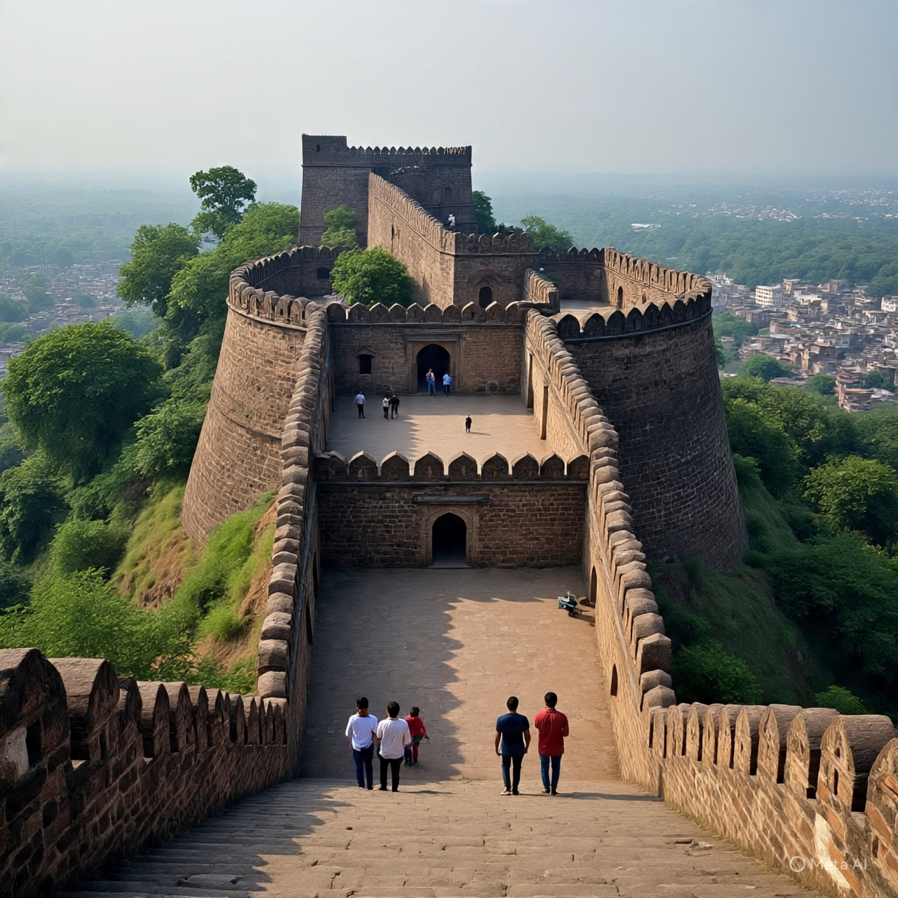

The Citadel & Heart of Raigad Fort
Scroll Down
The Bale Killa (Citadel) is the highest and most important part of Raigad Fort. It was the royal residence and court of Chhatrapati Shivaji Maharaj. From here, he managed the affairs of the Maratha Empire.
The Bale Killa housed the Raj Bhavan (King’s Palace), the Durbar Hall (royal court), treasury, and administrative offices. Being at the highest point, it gave a commanding view of the Sahyadri mountains and Konkan region.
The Bale Killa was the most secure part of the fort. With strong walls and limited access, it served as the last line of defense in case of an enemy attack. It also symbolized the power and sovereignty of the Maratha Empire.
Today, the ruins of Bale Killa still stand tall, reminding visitors of its former glory. Tourists can walk through the remains of the royal court and imagine the grandeur of Shivaji Maharaj’s coronation and royal assemblies.